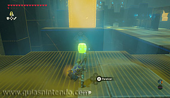

Se encuentra en la región de la torre de Hebra, al sudoeste de dicha torre, en un ángulo que hace el cañón de Tanagar que por allí podrás encontrar (al sur de la laguna Orlim y al sudeste de la posta orni).
Usa la paravela para descender hasta el fondo de dicho cañón y así podrás encontrar el santuario.
Según entres al santuario verás un engranaje giratorio con una plataforma. Usa el módulo Paralizador para detener el engranaje cuando su plataforma esté horizontal y así harás que una bola que desciende por una rampa que hay a su derecha pase por encima y golpee a un interruptor que hay a la izquierda. Así abrirás una puerta que hay a mano izquierda.
En la próxima habitación gira a la izquierda en cuando puedas para llegar a una zona en la que hay cuatro barriles a mano derecha y una puerta cerrada con rejas a mano izquierda tras la que puede verse un cofre. Colócate junto a dicha puerta y lanza Bombas desde ahí hacia unos bloques de piedra que hay a su derecha para desplazarlos y dejar al descubierto un interruptor como el de la primera sala.
Luego coloca uno de los barriles que hay enfrente y ponlo en el borde del suelo que queda frente al interruptor que acabas de descubrir, y después utiliza el módulo Paralizador en él y golpéalo varias veces para que acumule energía y termine saliendo disparado hacia el interruptor (unos seis golpes con el martillo de hierro, por ejemplo). Si todo sale bien, el barril pulsará el interruptor y se abrirán las rejas, pudiendo así acceder al cofre (contiene un arco de halcón).
Al otro lado de la valla que hay junto a los barriles encontrarás una esfera de piedra que deberás hacer rodar hacia una pequeña rampa que tiene cerca. Después utiliza el módulo Paralizador en ella y golpéala varias veces para que acumule energía y termine saliendo disparada hacia un interruptor que hay en el suelo (unos dos golpes con el martillo de hierro, por ejemplo). Si todo sale bien, la esfera caerá sobre el interruptor y se abrirán unas rejas que hay al fondo, pudiendo así acceder a un cofre que contiene un mandoble del rayo.
Dirígete ahora a la zona que queda al otro lado de la estancia donde estaba la esfera para encontrar otros cuatro barriles y luego coloca uno de ellos en el borde del suelo. Después utiliza el módulo Paralizador en él y golpéalo varias veces para que acumule energía y termine saliendo disparado hacia una gran losa vertical que hay enfrente (unos seis golpes con el martillo de hierro, por ejemplo). Si todo sale bien, el barril tirará la losa y caerá sobre un interruptor que abrirá el altar del santuario, lugar donde podrás conseguir un símbolo de valía.
